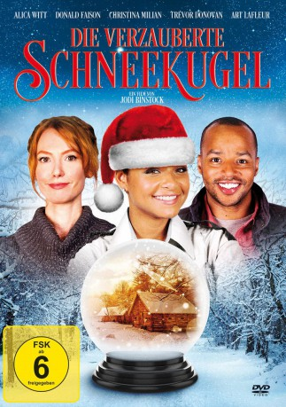
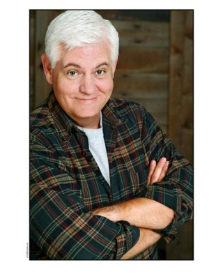

#7800 Die Verzauberte Schneekugel
Alternativ: A Snow Globe Christmas
 
 IMDB-Wertung: 5.6 / 10
IMDB-Wertung: 5.6 / 10  Metascore: 0
Metascore: 0 
Fernsehproduzentin Meg muss das Weihnachtsprogramm organisieren, hat aber mit Weihnachtsromantik wenig im Sinn. Als sie von einer Schneekugel am Haupt getroffen wird und aus ihrer Bewusstlosigkeit erwacht, findet sie sich wieder in einem idyllischen kleinen Dörfchen nicht unähnlich dem in der Schneekugel, als Ehefrau eines farbigen Holzfällers und Mutter von zwei Teenager-Kindern. Zunächst an einen Scherz der Kollegen glaubend, muss sie feststellen, dass die Sache realer ist, als sie annimmt. Nun muss sie sich in der fremden Welt bewähren.
Jahr: 2013
Dauer: 90 Minuten
FSK: 6
Land: USA Studio: Lifetime Movie NetworkTonspuren:
Untertitel:
Auflösung: 1080p (1920x1080) Größe: 5345 MB
Genre: Drama, Fantasy, Familie, Liebe, Weihnachten
Regisseur: Jodi Binstock
Drehbuch: Naomi L. Selfman
Soundtrack: Chris Ridenhour
Darsteller:
 Alicia Witt als Meg
Alicia Witt als Meg Donald Faison als Ted
Donald Faison als Ted- Christina Milian als Sal
- Trevor Donovan als Eric
 Art LaFleur als Mr. Barns
Art LaFleur als Mr. Barns- Damoni Burkhardt als Mia
- Hayden Faraday als Teddy Jr.
- Francia Raisa als Penny
- Jackie Moore als Jessica
- Alex Ball als Poskins
- Brody Hutzler als Hugh
- Diahnna Nicole Baxter als Barb
- Tyler Griffin als Stan
- Talia Jackson als Lisa
- Jeff Marchelletta als Mr. Jenkins
- Michael Bonnabel als Carl
-  Steve Tom als Doc Wilson
 Gerald Webb als Daniel Blevins
Gerald Webb als Daniel Blevins- Neil Dickson als Frank
- Jodi Binstock als Director
- Craig Blair als Stevens
- Elaine Ballace als Background Person
- Jair Burgos als Mills
- Hans Hernke als Party Guest / Town Person
- Logan Binstock als Veronica / Mary
- Amy Ryder als Winnie
- Henry 'Chopper' Platt als Jakey
- Anna Brisbin als Waitress
- Daisy Stoneman als Violet
- Derek Sean als Dale
- Owen Roberts als Wiseman #1
- Lizzy Rich als Charlotte
- Dean Acevedo als Background Person
- Marwence Agustin als Background Person
- Bobak Amuzegar als Background Person
- Joe Angeles als Background Person
- Carlos Ayala als Background Person
- Steve Bakomitros als Background Person
- Antonio Bardales als Background Person
- Aaliyah Beasley als Background Person
- Linda Beasley als Background Person
- Natasha Beauboeuf als Background Person
- Sandra Buttenfield als Background Person
- Jason Bud als Background Person
- Dillon Daniel als Joseph
- Patrice Gibbs als Production Crew / Town Person
- Kailey Liddell als Ted's niece
- William McCarthy als Background
- Antonio Reed als Town person
- Phillip Wheeler als Mr. Blevin's Partner
Datei: X:\2013(N-Z)\Verzauberte Schneekugel, Die (2013, FSK6, 1920x1080).mkv seit 20.12.2017
Festplatte: HD 2013(I-Z)-2014(A-Z)
 Es gibt insgesamt 133 Filme in der Gruppe '2013(N-Z)'
Es gibt insgesamt 133 Filme in der Gruppe '2013(N-Z)'